Tema 3.A.28
La tasa natural de paro y la NAIRU. La persistencia del desempleo.
Tipos de paro, curva de Phillips por escuelas (Friedman, Barro-Gordon, NKPC), NAIRU con el modelo WS-PS e histéresis del desempleo en España.
Exclusivo Material exclusivo de victorgutierrezmarcos.es y la app Oposición TCEE · DCE. Puedes usarlo libremente para tu estudio personal. No se autoriza su incorporación a otras plataformas, aplicaciones o servicios. Condiciones de uso.
Introducción
Enganche:
«Agua pasada no mueve molino», dice el refrán: lo que ya pasó no cambia lo que pasa hoy.
¿Vale para el paro? En 2007, antes de la crisis financiera, la tasa de paro de España era del 8,2 %; en 2013 llegó al 26,1 % (Comisión Europea, 2026a).
Hoy, tras más de una década de recuperación, está en el 10,2 % (Instituto Nacional de Estadística, 2026): la más baja desde 2008, pero todavía por encima de la de antes de la crisis y muy lejos del 6,4 % de la zona del euro (Comisión Europea, 2026a).
No solo cambió el paro efectivo. La tasa de paro que la Comisión Europea considera compatible con salarios estables en España subió del 13,6 % en 2007 al 16,9 % en 2013, y desde entonces baja despacio, detrás del paro (Comisión Europea, 2026b): la crisis no parece agua pasada.
Detrás está la pregunta de esta exposición: ¿hay un paro «natural» al que la economía vuelve sola, o el paro de hoy fija el de mañana?
Relevancia:
Social: el paro recorta la renta de los hogares y, cuando se alarga, deprecia las cualificaciones y aleja del empleo a quien lo sufre.
Para la teoría: la macroeconomía nació para explicar el paro, y en particular el involuntario, que fue su elemento definitorio (De Vroey, 2016, 26). ¿Es el paro un fenómeno de equilibrio o de desequilibrio? De la respuesta depende qué puede hacer la política económica.
Para la política económica: la tasa natural separa lo que puede hacer la política de demanda (acercar el paro a su nivel de equilibrio) de lo que solo pueden hacer las reformas (bajar ese nivel).
Para las instituciones: los bancos centrales la usan para saber si la economía se recalienta [ver tema 3.A.36], y la Comisión Europea estima su versión empírica, la NAWRU, para calcular el PIB potencial, la brecha de producción y el saldo estructural de las cuentas públicas (Havik et al., 2014) [ver tema 3.A.42].
Contextualización:
Está parado quien no tiene empleo, lo busca activamente y está disponible para trabajar; la tasa de paro, \(U_t\), es su proporción en la población activa (Instituto Nacional de Estadística, 2026).1
Esta exposición cierra el bloque del mercado de trabajo. El modelo neoclásico no deja paro involuntario, salvo con un salario mínimo [ver tema 3.A.25].
La búsqueda explica el paro friccional [ver tema 3.A.26], y la negociación y los salarios de eficiencia, por qué el salario real no baja aunque haya parados [ver tema 3.A.27].
Aquí se juntan esas piezas para responder a una pregunta macroeconómica: ¿cuánto paro hay cuando la economía está en equilibrio?
La tasa natural de paro, \(U^n\), es la que hay cuando no hay paro cíclico, es decir, cuando la inflación es la esperada. El concepto es de Phelps (1967) y Friedman (1968).
La NAIRU (non-accelerating inflation rate of unemployment) es la tasa de paro con la que la inflación no se acelera.
La idea la propusieron Modigliani y Papademos (1975) con el nombre de NIRU.
El acrónimo NAIRU se generalizó a partir de Tobin (1980, 24-25), y su modelo de referencia, el de fijación de salarios y precios, es el de Layard, Nickell y Jackman (1991).
Problemática:
¿Qué tipos de paro hay y cuáles forman el paro de equilibrio?
¿Puede la política de demanda bajar el paro de forma duradera, a cambio de algo más de inflación?
¿Qué determina el paro de equilibrio y qué políticas lo reducen?
¿Por qué no vuelve el paro a su nivel tras una recesión?
Estructura:
La exposición va de lo que se observa a lo que lo explica, y cada apartado responde a una pregunta:
I. Los tipos de paro (I): ¿qué paro hay y cuál es de equilibrio? El friccional y el estructural, con la búsqueda y el emparejamiento; el cíclico, con la ley de Okun, y las políticas para cada uno;
II. La tasa natural de paro: la evolución de la curva de Phillips (II): ¿puede la política de demanda bajar el paro de forma duradera? La respuesta de cada escuela, del debate previo a la curva de Phillips nuevo keynesiana, con sus implicaciones de política;
III. La NAIRU y la persistencia del desempleo (III): ¿por qué hay paro involuntario de equilibrio y por qué no vuelve a su nivel tras una recesión?
3.A.28. La tasa natural de paro y la NAIRU. La persistencia del desempleo
Introducción2′30″
I. Los tipos de paro: qué paro es de equilibrio6′30″
1. Clasificación del paro
2. Paro friccional y estructural: búsqueda y emparejamiento
3. Paro cíclico: la ley de Okun
4. Evidencia e implicaciones de política económica
II. La tasa natural de paro: la evolución de la curva de Phillips11′
1. El debate previo a la curva de Phillips
2. La síntesis neoclásica y la curva de Phillips
3. Enfoque monetarista: la tasa natural
4. Nueva macroeconomía clásica: reglas frente a discrecionalidad
5. Nueva economía keynesiana: la curva de Phillips nuevo keynesiana
III. La NAIRU y la persistencia del desempleo9′
1. Competencia imperfecta y salarios que no vacían el mercado
2. La NAIRU: fijación de salarios y precios
3. La persistencia del desempleo y la histéresis
Conclusión1′
Reparto del cante: introducción, 2′30″; I, 6′30″ (I.1, 1′30″; I.2, 2′30″; I.3, 1′30″; I.4, 1′); II, 11′ (II.1, 1′30″; II.2, 2′30″; II.3, 2′30″; II.4, 2′30″: expectativas racionales, 0′30″, y Kydland-Prescott y Barro-Gordon, 2′; II.5, 2′); III, 9′ (III.1, 1′; III.2, 4′30″; III.3, 3′30″), y conclusión, 1′. El subapartado II.1 es un resumen: su desarrollo está en el anexo A.
I. Los tipos de paro: qué paro es de equilibrio
Conclusión anticipada: no todo el paro es igual. El friccional y el estructural existen aunque la economía vaya bien y forman el paro de equilibrio; el cíclico sube y baja con la producción. Cada tipo tiene su causa y su remedio, y confundirlos lleva a aplicar la política equivocada.
Antes de preguntarnos si la política de demanda puede bajar el paro, conviene saber qué paro queremos bajar.
I.1. Clasificación del paro
Según su causa, se distinguen 4 tipos de paro (tabla 1):
el paro friccional es el de quien está entre 2 empleos o acaba de entrar en el mercado, porque encontrar el puesto adecuado lleva tiempo;
el paro estructural es el desajuste duradero entre lo que ofrecen los trabajadores y lo que piden las empresas (cualificación, sector, región), y el que causan los salarios fijados por encima del que vaciaría el mercado (negociación colectiva, salarios de eficiencia, salario mínimo);
el paro cíclico es el que nace de una demanda agregada insuficiente: sube en las recesiones y baja en las expansiones;
el paro estacional es el que se repite cada año con el calendario (turismo, campañas agrícolas, curso escolar). No es un problema macroeconómico, y las series se desestacionalizan para no confundirlo con el ciclo.
Según la voluntad del parado:
es voluntario el de quien no acepta trabajar al salario vigente, porque no supera su salario de reserva [ver tema 3.A.25];
es involuntario el de quien trabajaría al salario vigente, o a uno algo menor, y no encuentra empleo. Es el que hace falta explicar, y el que separa a las escuelas (II).
Según el mercado que falla: en el enfoque del desequilibrio de Edmond Malinvaud, el paro keynesiano se debe a la falta de demanda de bienes, y el paro clásico, a unos salarios reales demasiado altos para que a las empresas les compense contratar [ver tema 3.A.4]. El primero se cura con demanda y el segundo, con moderación salarial.
El friccional y el estructural forman la tasa natural de paro, \(U^n\): el paro que queda cuando desaparece el cíclico. Que se llame «natural» no quiere decir que sea inevitable ni deseable.
| Tipo | Causa | ¿De equilibrio? | Qué lo reduce |
|---|---|---|---|
| Friccional | buscar empleo lleva tiempo; información imperfecta | sí | servicios de empleo, información sobre vacantes, movilidad (I.2) |
| Estructural | desajuste de cualificaciones, sectores o regiones; salarios que no vacían el mercado | sí | formación y políticas activas; instituciones que moderen salarios y márgenes (III.2) |
| Cíclico | demanda agregada insuficiente | no | política de demanda, monetaria y fiscal (I.3) |
| Estacional | calendario de la actividad | no es macroeconómico | contratos que duren toda la temporada, como los fijos discontinuos; diversificar la actividad |
Fuente: elaboración propia.
I.2. Paro friccional y estructural: búsqueda y emparejamiento
a) Idea
¿Por qué hay paro cuando la economía está en equilibrio? Porque buscar empleo lleva tiempo. Phelps (1968) y los trabajos que reunió en Phelps (1970) lo buscaron en la información imperfecta.
Los modelos de búsqueda y emparejamiento de Peter Diamond, Dale Mortensen y Christopher Pissarides dan al paro de equilibrio un fundamento en los flujos del mercado de trabajo (Pissarides, 2000) [ver tema 3.A.26].
En equilibrio conviven parados y vacantes: el paro de equilibrio no es el de paro igual a vacantes, como advertía el propio Milton Friedman (Friedman, 1968, 8).
b) Modelo
i) Supuestos
Cada periodo se rompe una fracción \(s\) de los empleos (la tasa de separación).
Cada parado encuentra empleo con probabilidad \(f(\theta)\), que crece con la tensión del mercado, \(\theta\equiv V/U\): las vacantes por parado (\(\theta\) no es aquí la aversión al riesgo, y \(f(\theta)\) no es la \(f(U)\) de Lipsey que veremos en el subapartado II.2).
El salario se negocia en cada emparejamiento, y las empresas abren vacantes mientras les compense.
ii) Desarrollo
El paro cambia con las entradas menos las salidas, \(\dot U=s\,(1-U)-f(\theta)\,U\). En el estado estacionario, las entradas en el paro igualan a las salidas, \(s\,(1-U)=f(\theta)\,U\), y el paro de equilibrio es \[U^n=\frac{s}{s+f(\theta^*)} \tag{1}\] con \(\theta^*\) la tensión de equilibrio, que fijan juntas la creación de empleo y la negociación salarial: es el paro de equilibrio \(U^*\) del modelo de búsqueda [ver tema 3.A.26], y la tasa natural de Friedman (II.3).
Por ejemplo, con una tasa de separación mensual del 2 % y una probabilidad mensual de encontrar empleo del 30 %, \(U^n=0{,}02/0{,}32\approx6{,}3~\%\).
iii) Implicaciones
De qué depende: el paro de equilibrio sube con las separaciones y con todo lo que frena las salidas del paro.
Un emparejamiento menos eficiente (servicios de empleo, movilidad geográfica, cualificaciones que no encajan) es paro friccional y estructural.
Prestaciones más generosas o más poder negociador suben el salario negociado, se abren menos vacantes y sube \(U^n\).
La curva de Beveridge, que relaciona paro y vacantes, separa los tipos de paro: los movimientos a lo largo de la curva son paro cíclico; sus desplazamientos, cambios del paro friccional y estructural (gráfico 1).
¿Es óptimo? No tiene por qué. Solo lo es si el poder negociador de los trabajadores coincide con la elasticidad del emparejamiento respecto al paro: es la condición de Hosios (Hosios, 1990) [ver tema 3.A.26]. «Natural» no quiere decir deseable.

Fuente: elaboración propia a partir de O. Blanchard y Diamond (1989) y Cahuc, Carcillo y Zylberberg (2014, cap. 9).
c) Evidencia empírica
En España, la curva de Beveridge se desplazó hacia fuera en 2008-2009 porque empeoró el emparejamiento: los parados que venían de la construcción no tenían las cualificaciones de las vacantes de otros sectores (Boscá et al., 2017). Parte del paro cíclico de la crisis se volvió estructural.
d) Valoración
Aportación: explica el paro friccional y la coexistencia de paro y vacantes con agentes que optimizan, y dice qué políticas bajan el paro de equilibrio.
Limitaciones:
con salarios que se renegocian cada periodo, el paro y las vacantes responden muy poco a los cambios de productividad (Shimer, 2005);
el paro que explica es friccional, no involuntario: hacen falta salarios que no vacíen el mercado, que aporta el análisis neokeynesiano (III.2).
I.3. Paro cíclico: la ley de Okun (1962)
Idea: el paro cíclico se mueve con la producción. Okun (1962), asesor económico del presidente John F. Kennedy, midió cuánta producción se perdía por cada punto de paro por encima del objetivo de la época, el 4 %: unos 3 puntos de PNB. Es el puente entre el paro y la producción, y entre la tasa natural de paro y la producción potencial.
Formulación: en diferencias y en brechas, \[U_t-U_{t-1}\approx-\vartheta\,\big(\gamma_{Y,t}-\bar\gamma_Y\big)\qquad\text{y}\qquad U_t-U^n\approx-\vartheta'\,\mathrm{OG}_t \tag{2}\] con \(\gamma_{Y,t}\) el crecimiento del PIB, \(\bar\gamma_Y\) el que mantiene estable el paro, cercano al potencial, y \(\mathrm{OG}_t\) la brecha de producción en porcentaje del potencial, \(Y^p\) [ver tema 3.A.42].
La cifra de Okun, 3 puntos de producción por punto de paro, equivale a un coeficiente \(\vartheta\approx1/3\). Las estimaciones actuales para Estados Unidos rondan 0,45: medio punto menos de paro por cada punto de crecimiento por encima de \(\bar\gamma_Y\) (Ball, Leigh y Loungani, 2017).
El coeficiente es menor que 1 porque, cuando cae la producción, no todo es despido: bajan también las horas por trabajador, la participación y la productividad, porque las empresas retienen plantilla.
Implicaciones:
Evidencia: la relación se cumple bien y es bastante estable en casi todas las economías avanzadas, pero el coeficiente varía mucho entre países: 0,15 en Japón, donde el empleo es casi de por vida; 0,45 en Estados Unidos, y 0,85 en España, el más alto, por el peso de los contratos temporales (Ball, Leigh y Loungani, 2017). Con datos de 1996-2025 (sin 2020-2021), en España cada punto de crecimiento por encima del 1,8 % ha bajado el paro en 0,8 puntos (Eurostat, 2026; Comisión Europea, 2026a) (gráfico 2).
Valoración: es una regularidad empírica, no un modelo. Falla cuando hay mucha economía sumergida y cuando se protege el empleo, como con los expedientes de regulación temporal de empleo (ERTE) de 2020, en los que la producción cayó un 10,9 % y el paro solo subió 1,4 puntos (Eurostat, 2026; Comisión Europea, 2026a) [ver tema 4.A.16].
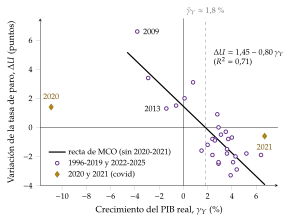
I.4. Evidencia e implicaciones de política económica
a) Evidencia empírica
El paro de equilibrio no se observa: se estima. La NAWRU de la Comisión Europea, la tasa de paro que no acelera los salarios, es la estimación más usada en Europa (III.2).
España: en 2013, con un paro del 26,1 % y una NAWRU del 16,9 %, unos 9 puntos de paro eran cíclicos; en 2025, con un paro del 10,5 % y una NAWRU del 12,1 %, el paro estaba ya por debajo de su nivel de equilibrio estimado (Comisión Europea, 2026b, 2026a). El problema español es sobre todo de paro estructural.
Instituciones: la economía institucional subraya que el paro depende también de reglas y relaciones de poder: la legislación laboral, la negociación colectiva, las prestaciones. El paro de equilibrio es mayor con prestaciones más generosas y largas y con negociación de mucha cobertura y poca coordinación (Nickell, 1997) (III.2).
b) Implicaciones de política económica
Cada tipo de paro, su política (tabla 1):
el friccional baja con políticas activas de intermediación: servicios públicos de empleo, información sobre vacantes, movilidad geográfica;
el estructural baja con formación y recualificación y con reformas de las instituciones que fijan salarios y precios: negociación colectiva, prestaciones, cuña fiscal, competencia en los mercados de bienes;
el cíclico baja con la política de demanda, monetaria y fiscal, y con instrumentos que protegen el empleo en las recesiones, como los ERTE;
el estacional se suaviza con contratos que duren toda la temporada y con una actividad más diversificada.
Políticas activas y pasivas: las prestaciones (políticas pasivas) protegen la renta del parado, pero, si son muy largas, frenan la búsqueda; las políticas activas buscan acortar el paro [ver tema 4.A.16].
Recapitulación del apartado: el paro friccional y el estructural forman el paro de equilibrio, que los modelos de búsqueda explican con los flujos; el cíclico se mueve con la producción, como dice la ley de Okun. Queda la pregunta central: ¿puede la política de demanda llevar el paro por debajo de su nivel de equilibrio de forma duradera? La respuesta ha cambiado con la curva de Phillips.
II. La tasa natural de paro: la evolución de la curva de Phillips
Conclusión anticipada: la curva de Phillips parecía ofrecer a los gobiernos un menú entre inflación y paro. Al introducir las expectativas, Milton Friedman y Edmund Phelps muestran que esa disyuntiva solo existe a corto plazo: a largo plazo el paro vuelve a su tasa natural, que fijan factores reales.
Cada escuela ha leído la curva de otra forma, y de cada lectura sale una política económica distinta: del ajuste fino de la demanda a las reglas, la independencia de los bancos centrales y los objetivos de inflación.
Una vez vistos los tipos de paro, pasamos a ver cómo ha evolucionado la idea de un paro de equilibrio, empezando por el debate previo a la curva.
II.1. El debate previo a la curva de Phillips
Conclusión anticipada: los neoclásicos explican el paro como voluntario o como fruto de salarios que no pueden bajar; John Maynard Keynes, como involuntario, causado por una demanda insuficiente. Ninguno de los 2 tiene una teoría de la inflación.
Sus conclusiones dependen sobre todo de lo que suponen sobre el comportamiento de los agentes y la flexibilidad de los salarios. Aquí basta con lo que se necesita para seguir la exposición; el desarrollo, con sus gráficos, está en el anexo A.
II.1.1. Enfoque neoclásico
Idea: el trabajo es un mercado como cualquier otro. La demanda sale de la productividad marginal del trabajo, \(W/P=\mathrm{PMg}_L\), y la oferta, de la elección entre consumo y ocio de los trabajadores; el salario real se ajusta hasta vaciar el mercado [ver tema 3.A.25].
Implicaciones:
Con información perfecta y salarios flexibles no hay paro involuntario, salvo con un salario mínimo, ni siquiera friccional: quien no trabaja es porque el salario de mercado no supera su salario de reserva, \(w^R\) [ver tema 3.A.25].
El paro voluntario puede fluctuar: si los trabajadores sustituyen trabajo de hoy por trabajo de mañana cuando el salario real de hoy es bajo, el empleo cae en las recesiones sin que nadie esté racionado (Lucas y Rapping, 1969) [ver tema 3.A.25].
El empleo y la producción se determinan en el lado de la oferta y no dependen del dinero ni de los precios (dicotomía clásica): la oferta agregada es vertical.
Implicaciones de política: la política de demanda no mueve el empleo, y la recomendación es eliminar lo que impide que el salario baje.
Valoración: el paro masivo de la Gran Depresión no encajaba con un mercado que se vacía. Los neoclásicos lo atribuían a rigideces que paraban el ajuste: la de los salarios, por los sindicatos, que ya estudiaba Hicks (1932) [ver tema 3.A.27], y el poder de mercado de las grandes empresas, que la competencia monopolística de Chamberlin (1933) ayudaba a entender [ver tema 3.A.18].
Con el lenguaje de la tabla de supuestos del modelo neoclásico [ver tema 3.A.25], esta exposición levanta 2 (tabla 2).
| N.º | Supuesto | En el mercado de trabajo | Se levanta en esta exposición |
|---|---|---|---|
| 4 | Mercado atomizado: muchos compradores y vendedores (precio-aceptantes) | muchas empresas y muchos trabajadores, y todos toman el salario como dado | sindicatos y empresas con poder de mercado fijan salarios y precios: la NAIRU (III.2) |
| 6 | Salarios y precios flexibles | el salario se ajusta hasta vaciar el mercado | salarios nominales fijados con expectativas: la tasa natural (II.3); precios rígidos (II.5); salarios reales que no vacían el mercado (III.2) y que dependen de la historia del paro (III.3) |
Fuente: elaboración propia.
II.1.2. Enfoque keynesiano
Idea: Keynes (1936) levanta 2 supuestos del modelo neoclásico. Los trabajadores negocian el salario nominal, no el real, y ese salario nominal es rígido a la baja.
Desarrollo:
La demanda de trabajo sigue siendo la neoclásica, pero no la oferta: la demanda agregada fija la producción, y la función de producción, el empleo. El salario real es el que corresponde a ese empleo.
Si cae la demanda, bajan los precios; con el salario nominal fijo, sube el salario real y las empresas contratan menos. El ajuste se hace por cantidades y aparece el paro involuntario. Para Keynes lo hay cuando, ante una pequeña subida de los precios respecto del salario nominal, tanto la oferta como la demanda de trabajo a ese salario superarían el empleo existente (Keynes, 1936, cap. 2) [ver tema 3.A.4].2
Mientras haya recursos ociosos, la oferta agregada tiene pendiente positiva: más demanda sube algo los precios, baja el salario real y aumenta el empleo. Cuando se agotan, se vuelve vertical, como en el caso neoclásico.
Implicaciones de política: el paro involuntario se combate con políticas de demanda, fiscal sobre todo; bajar los salarios no es la solución.
Lo que queda abierto:
una expansión de demanda puntual sube el nivel de precios una sola vez; para mantener más empleo habría que repetirla cada año, y eso es inflación: falta una teoría de la inflación;
¿por qué iban a negociar los trabajadores sin tener en cuenta la inflación que esperan? Es la crítica que harán Friedman y Phelps.
II.2. La síntesis neoclásica y la curva de Phillips
II.2.1. Modelo IS-LM
La síntesis neoclásica integra a Keynes en el marco del equilibrio general con el modelo IS-LM [ver tema 3.A.5]. En ese marco, el paro se debe a la rigidez del salario nominal: puede haber equilibrio en los mercados de bienes y de dinero a un nivel de precios dado y, al salario vigente, paro.
Con salarios flexibles, la bajada de salarios y precios aumenta los saldos reales, baja el tipo de interés y estimula la inversión (efecto Keynes) hasta el pleno empleo. Solo lo impiden 2 casos particulares: la trampa de la liquidez y una inversión insensible al tipo de interés. En ellos, solo la política fiscal saca a la economía del paro (anexo A).
Al modelo le falta una pieza: trabaja con un nivel de precios dado y no explica la inflación. Esa pieza será la curva de Phillips.
II.2.2. Curva de Phillips original (1958)
a) Idea
La curva de Phillips nace como una regularidad empírica: cuando hay poco paro, los salarios crecen deprisa. Recibió en 2 años un fundamento teórico y una lectura de política económica, el menú entre inflación y paro, que es la que discutirán Friedman y Phelps.
b) Modelo
i) La regularidad empírica: Phillips (1958)
El economista neozelandés A. W. Phillips estudió la relación entre el paro y el ritmo de variación de los salarios nominales en el Reino Unido entre 1861 y 1957.3 Con los datos de 1861-1913 estimó (Phillips, 1958, 290): \[\log\big(\gamma_W+0{,}900\big)=0{,}984-1{,}394\,\log U \tag{3}\] con \(\gamma_W\equiv\dot W/W\) el ritmo anual de variación del salario nominal y \(U\) la tasa de paro, ambos en %. Es lo mismo que \(\gamma_W=9{,}638\,U^{-1{,}394}-0{,}900\).
La relación es inversa y no lineal (convexa): con un paro de alrededor del 5,5 %, los salarios nominales no crecen; con algo menos del 2,5 % (el 2,4 % según la ecuación), crecen un 2 % al año, el ritmo de la productividad, de modo que los precios quedarían estables (Phillips, 1958, 299) (gráfico 3).
Cada punto del gráfico es un año de 1861-1913, y cada cruz, la media de los años con un paro parecido: la curva pasa cerca de las cruces.
Los datos de 1948-1957 caían cerca de la curva estimada con los de 1861-1913: parecía una relación estable durante casi un siglo.
Aunque su análisis es empírico, Phillips apuntó 3 explicaciones:
el exceso de demanda de trabajo: con poco paro, las empresas compiten por los trabajadores y suben los salarios;
el ritmo al que cambia el paro (el «límite de velocidad»): los salarios suben más cuando el paro está bajando que cuando, al mismo nivel, está subiendo, y por eso los datos dan vueltas alrededor de la curva;
el coste de la vida: cuando los precios de importación suben mucho, los trabajadores piden más salario.
La convexidad recogería que los trabajadores se resisten a aceptar bajadas del salario nominal aunque el paro sea alto.
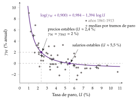
Fuente: elaboración propia a partir de Phillips (1958, fig. 1, 290 y 299); los puntos y las cruces están digitalizados del gráfico original del artículo.
ii) El fundamento teórico: Lipsey (1960)
Lipsey (1960) le dio a la curva una explicación de exceso de demanda, con 2 supuestos:
el salario nominal sube más deprisa cuanto mayor es el exceso de demanda de trabajo: \(\gamma_W=g\big[(L^D-L^S)/L^S\big]\), con \(g'>0\);
el exceso de demanda baja con el paro, de forma no lineal: \((L^D-L^S)/L^S=h(U)\), con \(h'<0\). Cuando el exceso de demanda es nulo, el paro no es cero: queda el friccional.
Juntos dan la curva: \[\gamma_W=g\big[h(U)\big]\equiv f(U),\qquad f'<0 \tag{4}\] Lipsey amplió además la ecuación de Phillips con la variación de la tasa de paro y la de los precios al consumo.
Es la reconstrucción que permitió a los keynesianos integrar la curva sin renunciar al paro involuntario (De Vroey, 2016, 42-43).4
iii) El menú de política económica: Samuelson y Solow (1960)
Para pasar de salarios a precios basta con que las empresas fijen el precio con un margen constante sobre el coste laboral unitario (CLU), que es el salario dividido por la productividad media del trabajo, \(\mathrm{PAT}\):5 \[P=(1+\mu)\,\mathrm{CLU}=(1+\mu)\,\frac{W}{\mathrm{PAT}}\quad\Longrightarrow\quad\pi=\gamma_W-\gamma_{\mathrm{PAT}}\] y la curva queda en términos de inflación de precios: \(\pi_t=f(U_t)-\gamma_{\mathrm{PAT}}\), que en el tramo relevante se aproxima por una recta, \(\pi_t\approx\bar\pi-a\,U_t\), con \(a>0\).
Samuelson y Solow (1960) la estimaron para Estados Unidos y la presentaron como un «menú» de combinaciones de inflación y paro entre las que elegir (gráfico 4): la estabilidad de precios exigía en torno a un 5,5 % de paro, y bajarlo al 3 % costaba una inflación del 4,5 % anual.

Fuente: elaboración propia a partir de Samuelson y Solow (1960, 192, fig. 2).
c) Implicaciones de política económica
Un menú permanente: Samuelson y Solow avisaron de que el menú podía cambiar a largo plazo, pero la lectura que se impuso en los años 60 fue la de una disyuntiva permanente: con políticas de demanda se podía tener menos paro a cambio de más inflación.
Ajuste fino: la curva cerraba el modelo IS-LM. La demanda fijaba la producción y el empleo, y la curva de Phillips, la inflación de salarios y precios; el gobierno elegía el punto del menú y lo alcanzaba con la política fiscal y monetaria.
d) Evidencia empírica
La curva encajaba bien en los datos de los años 50 y 60, en el Reino Unido y en Estados Unidos: por eso se convirtió en una pieza de los modelos macroeconométricos de la época. En los años 70 dejó de hacerlo (II.3).
e) Valoración
Aportación: desde entonces, todos los modelos macroeconómicos han tenido que explicar la relación entre inflación y actividad. Como dijo Akerlof (2002) en su conferencia Nobel, la curva de Phillips es «probablemente la relación macroeconómica más importante».
Limitaciones:
no explica la inflación de costes, en la que más inflación va con más paro;
su fundamento teórico es débil: Lipsey explica el exceso de demanda, pero no por qué no se vacía el mercado;
sobre todo, no tiene en cuenta las expectativas, y esa es la crítica de Friedman y Phelps.
II.3. Enfoque monetarista: la tasa natural (Friedman y Phelps)
a) Idea
Edmund Phelps y Milton Friedman critican la lectura de la curva de Phillips como un menú permanente.6 Según Friedman (1968, 8), la curva «contiene un defecto básico: no distinguir entre salarios nominales y salarios reales». Un paro bajo indica exceso de demanda de trabajo, y eso presiona al alza el salario real, no el nominal.
Lo dijeron Phelps (1967, 1968) y Friedman (1968) a finales de los años 60, antes de que los datos les dieran la razón.
b) Modelo
i) Supuestos
Trabajadores y empresas negocian el salario nominal, pero lo que les importa es el salario real: no hay ilusión monetaria.
Al negociar, prevén la inflación del periodo, \(\pi^e_t\equiv\mathbb{E}_{t-1}[\pi_t]\). En la versión monetarista, las expectativas son adaptativas: en su forma más simple, \(\pi^e_t=\pi_{t-1}\).
Hay una tasa de paro de equilibrio que fijan factores reales: la tasa natural.
ii) Desarrollo
Si los trabajadores prevén inflación, el salario nominal sube con ella, \(\gamma_W=\pi^e_t+f(U_t)\), y la curva de precios queda:
\[\pi_t=\pi^e_t-a\,\big(U_t-U^n\big)+\varepsilon_t,\qquad a>0\tag{5}\]
con \(\varepsilon_t\) las perturbaciones de oferta (el precio de las materias primas, por ejemplo): la inflación de costes [ver tema 3.A.41].
La tasa natural de paro, \(U^n\), es la que hay cuando la inflación es la esperada (y sin perturbaciones de oferta). Para Friedman, es «el nivel que resultaría del sistema walrasiano de ecuaciones de equilibrio general, siempre que incorpore las características estructurales reales de los mercados de trabajo y de bienes» (Friedman, 1968, 8): las imperfecciones del mercado, la variabilidad de la oferta y la demanda, el coste de buscar información sobre vacantes y trabajadores, los costes de movilidad. Es el paro friccional y estructural del apartado I.7
«Natural» no quiere decir inmutable ni deseable: el salario mínimo o el poder de los sindicatos la elevan y unas mejores oficinas de empleo la bajan. Friedman usa el adjetivo, como Knut Wicksell con el tipo de interés natural, para separar las fuerzas reales de las monetarias.
Hay una curva de corto plazo para cada inflación esperada (gráfico 5):
partimos de \(A\), con \(U=U^n\) e inflación estable y esperada;
una expansión monetaria sube los precios; con \(\pi^e\) dada, el salario real cae, las empresas contratan más y los trabajadores, que confunden la subida del salario nominal con una del real, aceptan: el paro baja a \(U_1\) y la inflación sube a \(\pi_1\) (punto \(B\));
al ver que su salario real no ha subido, los trabajadores revisan sus expectativas, \(\pi^e=\pi_1\), y piden más salario nominal: el salario real vuelve a su nivel y el paro, a \(U^n\), con más inflación que al principio (punto \(C\)).
La curva de largo plazo, en la que \(\pi=\pi^e\), es vertical en \(U^n\). Pegatina: «no se puede estar en misa y repicando»: no se tiene a la vez menos paro y la misma inflación.
Con expectativas adaptativas, \(\pi^e_t=\pi_{t-1}\), y sin perturbaciones de oferta, (5) es la curva aceleracionista: \[\Delta\pi_t\equiv\pi_t-\pi_{t-1}=-a\,\big(U_t-U^n\big) \tag{6}\] Mantener el paro en \(U_1<U^n\) exige que la inflación suba cada periodo: de \(C\) hay que pasar a \(D\), con \(\pi_2>\pi_1\), y así sucesivamente. Es la hipótesis aceleracionista, y de ahí el nombre de NAIRU: la tasa de paro que no acelera la inflación.
Con la ley de Okun en brechas (2), la curva se escribe en producción, \(\pi_t=\pi^e_t+a\,\vartheta'\,\mathrm{OG}_t+\varepsilon_t\): es la oferta agregada de corto plazo.

iii) Implicaciones de política económica
«Siempre hay una disyuntiva temporal entre inflación y paro; no hay una disyuntiva permanente», y la temporal no viene de la inflación en sí, sino de la inflación no anticipada (Friedman, 1968, 11).
La política de demanda solo reduce el paro por debajo de \(U^n\) mientras la inflación no esté anticipada. Con expectativas adaptativas, los errores de previsión se van incorporando y el paro vuelve a su tasa natural, con más inflación.
Reglas antes que ajuste fino: la política monetaria no puede fijar el paro. Debe ocuparse de la inflación, con una regla de crecimiento estable de la cantidad de dinero, y como mucho ayudar a estabilizar la economía en torno a \(U^n\).
Políticas de oferta: para bajar \(U^n\) hay que actuar sobre esas «características estructurales» (I.4).
Bajar la inflación cuesta paro mientras las expectativas se ajustan: es el coste de las desinflaciones [ver tema 3.A.41].
Una explicación gráfica paso a paso de la curva aumentada con expectativas, con su lectura monetarista, en Policonomics (2026).
c) Evidencia empírica
A comienzos de los 70 la inflación dejó de responder al paro como predecía la curva original. En el Reino Unido, el paro subió del 3,5 % al 4,1 % entre 1969 y 1971 y la inflación, en vez de bajar, pasó del 5,2 % al 9,4 % (Bank of England, 2017). En Estados Unidos el paro subió del 3,5 % al 6 % (U.S. Bureau of Labor Statistics, 2026b) y la inflación, que aún subió en 1970, solo bajó en 1971, del 5,4 % de 1969 al 4,2 % (U.S. Bureau of Labor Statistics, 2026a): poco para tanto paro.
Tras el choque del petróleo de 1973 llegó la estanflación: en 1975, Estados Unidos tenía un paro del 8,5 % y una inflación del 9,1 % (U.S. Bureau of Labor Statistics, 2026b, 2026a). Las curvas de corto plazo se habían desplazado hacia arriba con la inflación esperada, como habían anunciado Friedman y Phelps.
d) Valoración
Aportación: separa el corto del largo plazo y pone las expectativas en el centro de la macroeconomía. La curva aumentada (5) sigue siendo la base de las curvas de Phillips actuales.
Críticas:
con expectativas adaptativas, los agentes se equivocan siempre en la misma dirección: mientras dura la aceleración, prevén menos inflación de la que hay, año tras año, lo que no casa con la racionalidad que se les supone. Es la crítica de la nueva macroeconomía clásica;
a inflación muy baja, la curva de largo plazo puede no ser vertical: si el salario nominal no baja, algo de inflación facilita el ajuste de los salarios reales y reduce el paro de forma permanente (Akerlof, Dickens y Perry, 1996).
II.4. Nueva macroeconomía clásica: reglas frente a discrecionalidad
II.4.1. Expectativas racionales y proposición de ineficacia
Idea: con expectativas racionales (Muth, 1961), los agentes usan toda la información disponible y no cometen errores sistemáticos. Despejando el paro de (5), \[U_t=U^n-\alpha\,\big(\pi_t-\pi^e_t\big)+\alpha\,\varepsilon_t,\qquad \alpha\equiv\frac{1}{a} \tag{7}\] el paro solo se separa de su tasa natural por las sorpresas. Es la curva de oferta de Lucas (1972), que la deriva con su modelo de islas: los productores confunden una subida general de los precios con una de su precio relativo.
Implicaciones de política:
la curva de Phillips es vertical también a corto plazo, salvo sorpresas, y la política monetaria sistemática, la que el público puede prever, no mueve el paro: es la proposición de ineficacia de Sargent y Wallace (1975);
la crítica de Lucas (1976) añade que las relaciones estimadas cambian cuando cambia la política, porque cambian las expectativas: la curva de Phillips de los años 60 no era un menú estable [ver tema 3.A.6].
Si la política sistemática no baja el paro, ¿por qué los gobiernos generan inflación? Es la pregunta de Kydland y Prescott.
II.4.2. Reglas frente a discrecionalidad: Kydland y Prescott (1977), Barro y Gordon (1983)
a) Idea
En «Rules Rather than Discretion», Kydland y Prescott (1977) muestran que una autoridad que vuelve a optimizar en cada periodo (discrecionalidad) acaba peor que una que se compromete con una regla: el plan óptimo de hoy deja de serlo mañana, cuando el público ya ha actuado creyéndolo. Es la inconsistencia temporal de la política económica.8
Barro y Gordon (1983a) lo llevan a la política monetaria con la curva de Phillips (7). Es una implicación directa de la curva: como a corto plazo la sorpresa baja el paro, la autoridad tiene la tentación de provocarla, y el público lo sabe.
La pregunta: ¿por qué una autoridad que quiere el bien común genera más inflación sin reducir el paro, y cómo se corrige?
b) Modelo
i) Supuestos
El juego: 2 jugadores, el público y la autoridad monetaria, con información completa: el público conoce la función de pérdida de la autoridad; lo que falta es compromiso [ver tema 3.A.14].
Orden de las jugadas: primero el público fija sus expectativas de inflación, \(\pi^e_t\) (por ejemplo, en los convenios); después, la autoridad elige la inflación. Si fuera al revés, la autoridad elegiría la regla y no habría inconsistencia.
El sector privado: la curva de Phillips con expectativas racionales (7), sin perturbaciones de oferta.
La autoridad: controla la inflación y minimiza una pérdida cuadrática en las desviaciones del paro y de la inflación respecto de sus objetivos, sujeta a la curva de Phillips: \[\begin{array}{rl}\displaystyle \min_{\pi_t} & \displaystyle L_t=(U_t-U^*)^2+\gamma\,(\pi_t-\pi^*)^2 \\ \text{s.a.} & U_t=U^n-\alpha\,(\pi_t-\pi^e_t)\end{array}\]
el paro objetivo es menor que el natural, \(U^*<U^n\), porque las distorsiones del mercado de trabajo (I) hacen que el paro natural sea demasiado alto; sin ello no hay sesgo;
\(\gamma>0\) es el peso de la inflación frente al paro, y \(\pi^*\), la inflación objetivo;
las curvas de pérdida son elipses centradas en el punto de felicidad, \((U^*,\pi^*)\); con \(\gamma=1\), circunferencias.
ii) Desarrollo
La autoridad, con \(\pi^e_t\) dada: sustituyendo la restricción en la pérdida, la condición de primer orden es \[\frac{\partial L_t}{\partial\pi_t}=-2\alpha\,(U_t-U^*)+2\gamma\,(\pi_t-\pi^*)=0\quad\Longrightarrow\quad \gamma\,(\pi_t-\pi^*)=\alpha\,(U_t-U^*)\] y su función de reacción es \(\pi_t=\big[\gamma\,\pi^*+\alpha^2\,\pi^e_t+\alpha\,(U^n-U^*)\big]/(\gamma+\alpha^2)\): cuanto más inflación espera el público, más inflación elige la autoridad.
El público, con expectativas racionales: no se deja engañar de forma sistemática, \(\pi^e_t=\pi_t\). Entonces \(U_t=U^n\) y la inflación de equilibrio es \[\pi^D=\pi^*+\frac{\alpha}{\gamma}\,\big(U^n-U^*\big)>\pi^* \tag{8}\]
Los 3 puntos (gráfico 6):
la regla (R, el punto 0): la autoridad anuncia \(\pi^*\) y la cumple; el paro es \(U^n\);
la tentación (T, el punto 1): si el público espera \(\pi^*\), a la autoridad le conviene sorprenderle con \(\pi^T=\pi^*+\alpha\,(U^n-U^*)/(\gamma+\alpha^2)\) y bajar el paro a \(U^T<U^n\), sobre la misma curva de corto plazo y en una curva de pérdida interior;
la discreción (D, el punto F): el público lo anticipa y espera más inflación (puntos 2 y 3), hasta \(\pi^D\), donde la curva de pérdida es tangente a la curva de corto plazo sobre la vertical de largo plazo: el mismo paro que con la regla y más inflación.
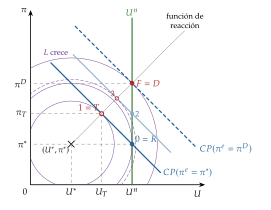
iii) Implicaciones de política económica
Sesgo inflacionista sin ganancia de paro: con discrecionalidad, la inflación supera al objetivo y el paro es el natural. El sesgo es mayor cuanto mayor es la distancia \(U^n-U^*\) y la pendiente \(\alpha\), y cuanto menos pesa la inflación, \(\gamma\).
La regla no es creíble: la tentación es lo mejor para la autoridad, y por eso el público no se cree la regla; se acaba en la discreción, la peor de las 3.
La credibilidad es un activo: para llegar a la regla hay que cambiar las reglas de juego de la autoridad, y de eso tratan las extensiones del modelo.
El vínculo con el paro de equilibrio: el sesgo nace de que el paro natural es mayor que el que se desea. Las políticas de oferta que bajan \(U^n\) (I.4) reducen también la tentación de inflar.
Las pérdidas de los 3 puntos, con \(\Delta\equiv U^n-U^*\): \(L^T=\gamma\,\Delta^2/(\gamma+\alpha^2)<L^R=\Delta^2<L^D=\Delta^2\,(1+\alpha^2/\gamma)\).
Teoría de juegos: la discreción es el equilibrio de John Nash del juego entre la autoridad y el público, y el equilibrio perfecto en subjuegos con el público moviendo primero [ver tema 3.A.14]. Con agentes racionales, la economía va a D desde el primer momento: el recorrido 0-1-2-3-F es solo potencial.
La condición de segundo orden se cumple: \(\partial^2L_t/\partial\pi_t^2=2(\alpha^2+\gamma)>0\).
c) Extensiones: cómo llegar a la regla
Reputación: si el juego se repite, la autoridad puede sacrificar el corto plazo para ganarse fama de dura con la inflación (Barro y Gordon, 1983b).
Reglas: un mandato legal, o «atarse las manos» con un tipo de cambio fijo o una unión monetaria con un país de baja inflación (Giavazzi y Pagano, 1988) [ver tema 3.B.16].
Un banquero central conservador: si la autoridad pesa más la inflación que la sociedad, \(\gamma'>\gamma\), el sesgo baja a \((\alpha/\gamma')(U^n-U^*)\), a costa de estabilizar menos la producción ante perturbaciones de oferta (Rogoff, 1985).
Un contrato de incentivos: una penalización lineal en la inflación elimina el sesgo sin ese coste (Walsh, 1995).
Independencia del banco central: lo aleja del ciclo político y de la financiación del déficit. El desarrollo de estas soluciones pertenece al diseño de la política monetaria [ver tema 3.A.36].
d) Evidencia empírica
Los índices de independencia legal de los bancos centrales se asocian con menos inflación en los países industriales, no en los países en desarrollo (Cukierman, Webb y Neyapti, 1992).
Entre los países ricos, los bancos centrales más independientes han tenido menos inflación, y menos variable, sin menos crecimiento (Alesina y Summers, 1993). Correlación no es causalidad: una sociedad con aversión a la inflación puede explicar las 2 cosas.
e) Valoración
Aportación: es la base de la arquitectura actual de la política monetaria: bancos centrales independientes, con un objetivo de inflación explícito y transparentes.
Críticas:
la función de pérdida se postula, no se deriva del bienestar de los hogares;
un banco central que sabe que no puede bajar el paro de forma duradera puede, sin más, no intentarlo (McCallum, 1995);
explica el nivel de la inflación, pero no cómo responder a las perturbaciones: para eso hace falta un modelo con rigideces, el de la nueva economía keynesiana.
II.5. Nueva economía keynesiana: la curva de Phillips nuevo keynesiana
II.5.1. La curva de Phillips nuevo keynesiana
a) Idea
La nueva economía keynesiana acepta las expectativas racionales y los agentes que optimizan, pero añade competencia imperfecta y precios rígidos. Con ellos la política monetaria vuelve a mover la producción y el empleo a corto plazo, aunque sea anticipada [ver tema 3.A.7].
La curva de Phillips deja de ser una relación que se postula: sale de cómo fijan sus precios las empresas.
b) Modelo
i) Supuestos
Competencia monopolística: cada empresa fija su precio con un margen \(\mu\) sobre su coste marginal.
Precios rígidos à la Calvo: en cada periodo, cada empresa solo puede revisar su precio con probabilidad \(1-\eta\) (Calvo, 1983); la que revisa sabe que su precio durará y mira al futuro.
Expectativas racionales y la brecha de producción, \(x_t\), como medida del ciclo.
ii) Desarrollo
La inflación depende de la esperada para mañana y de la brecha de hoy: es la curva de Phillips nuevo keynesiana (NKPC), con la notación del modelo canónico [ver tema 3.A.7]: \[\pi_t=\beta\,\mathbb{E}_t[\pi_{t+1}]+\kappa\,x_t+u_t \tag{9}\] con \(\beta\) el factor de descuento, \(\kappa>0\) la pendiente, menor cuanto más rígidos son los precios, y \(u_t\) una perturbación de costes (Clarida, Galí y Gertler, 1999).
En paro: con la ley de Okun en brechas (2), \(x_t\approx-(U_t-U^n)/\vartheta'\), y la curva se parece a la aumentada: \[\pi_t=\beta\,\mathbb{E}_t[\pi_{t+1}]-\frac{\kappa}{\vartheta'}\,\big(U_t-U^n\big)+u_t\]
Frente a la curva aumentada (5):
la expectativa es la de la inflación de mañana, no la de hoy, y sale de la optimización de las empresas;
resolviendo hacia delante, \(\pi_t=\kappa\sum_{k\geq0}\beta^k\,\mathbb{E}_t[x_{t+k}]\): la inflación de hoy es el valor presente de las brechas futuras;
a largo plazo, con \(\pi\) constante, \(x=(1-\beta)\,\pi/\kappa\): como \(\beta\) es casi 1, la curva de largo plazo es casi vertical, y la tasa natural sigue siendo el ancla.
iii) Implicaciones de política económica
Divina coincidencia: sin perturbaciones de costes, estabilizar la inflación estabiliza también la brecha, y el paro queda en su tasa natural: el banco central no tiene que elegir (O. J. Blanchard y Galí, 2007). Con \(u_t\), sí: aparece un dilema a corto plazo.
Reglas de tipos de interés: el banco central fija el tipo de interés con una regla de John Taylor (Taylor, 1993) y, para anclar las expectativas, sube el tipo real cuando sube la inflación [ver tema 3.A.36].
Compromiso frente a discreción: también aquí comprometerse da mejores resultados; con discreción el banco central estabiliza peor la inflación ante las perturbaciones de costes (Clarida, Galí y Gertler, 1999). Es la otra cara de la inconsistencia temporal de Kydland y Prescott.
Objetivo de inflación flexible: devolver la inflación al objetivo de forma gradual, teniendo en cuenta la brecha, es la estrategia de casi todos los bancos centrales.
c) Evidencia empírica
Con el coste marginal real (la participación del trabajo en la renta) en lugar de la brecha, la NKPC se ajusta bien a los datos de Estados Unidos, y el término retrospectivo pesa poco (Galí y Gertler, 1999).
Se ha aplanado: el efecto del paro sobre la inflación, dadas las expectativas, cayó hasta principios de los 90 y desde entonces es pequeño (O. Blanchard, Cerutti y Summers, 2015); con las expectativas ancladas, la inflación vuelve a depender del nivel del paro, como en los años 60 (O. Blanchard, 2016).
No es lineal: la subida de la inflación de 2021-2023, con mercados de trabajo muy tensos, recuperó la convexidad de la curva original: plana con mucho paro y empinada con muchas vacantes por parado (Benigno y Eggertsson, 2023).
d) Valoración
Aportación: da a la curva de Phillips microfundamentos y la convierte en una de las 3 ecuaciones del modelo con el que trabajan los bancos centrales.
Limitaciones: al ser solo prospectiva, explica mal la persistencia de la inflación (de ahí la curva híbrida, con inflación pasada) [ver tema 3.A.41]; y en el modelo canónico no hay paro, solo horas trabajadas.
II.5.2. El modelo nuevo keynesiano con desempleo
Paro y divina coincidencia: O. Blanchard y Galí (2010) introducen en el modelo nuevo keynesiano canónico fricciones de búsqueda y un salario real rígido.
Estabilizar la inflación ya no basta para estabilizar el paro: se rompe la divina coincidencia.
En los mercados de trabajo escleróticos, con pocas entradas y salidas del paro, este es más persistente [ver tema 3.A.7].
La vuelta de la curva salarial: Galí (2011) define el paro como la diferencia entre quienes querrían trabajar al salario vigente y quienes trabajan, y obtiene una curva de Phillips salarial parecida a la original de 1958. Su tasa natural, el paro que habría con salarios flexibles, existe por el poder de mercado de los trabajadores: une la tasa natural y la NAIRU.9
Recapitulación del apartado: la curva de Phillips parecía un menú; con expectativas, la disyuntiva es solo de corto plazo y el paro gravita en torno a una tasa natural; con expectativas racionales, intentar explotarla solo trae un sesgo inflacionista, y de ahí las reglas y los bancos centrales independientes; con precios rígidos, la política vuelve a mover el empleo a corto plazo, pero el ancla sigue siendo la tasa natural (tabla 3).
Pero en Europa el paro subió en los 70 y en los 80 y no volvió: ¿por qué hay paro involuntario en equilibrio y por qué no baja? La respuesta exige salarios y precios fijados por agentes con poder de mercado: es la NAIRU.
| Escuela | Relación entre inflación y paro | Paro de equilibrio | Política económica |
|---|---|---|---|
| Neoclásicos | ninguna: oferta agregada vertical | voluntario, o por rigideces | quitar lo que impide bajar el salario |
| Keynes | sin teoría de la inflación | hay paro involuntario por falta de demanda | demanda, sobre todo fiscal |
| Síntesis | curva de Phillips: un menú estable | no se define | ajuste fino de la demanda |
| Monetarismo | curva aumentada: disyuntiva solo a corto plazo; vertical a largo | tasa natural | regla monetaria; políticas de oferta para bajar \(U^n\) |
| Nueva macroeconomía clásica | vertical salvo sorpresas | tasa natural | ineficacia de la política sistemática; reglas, credibilidad e independencia |
| Nueva economía keynesiana | NKPC: disyuntiva a corto plazo por precios rígidos; casi vertical a largo | tasa natural; con salarios rígidos, NAIRU | regla de tipos de interés y objetivo de inflación flexible |
Fuente: elaboración propia.
III. La NAIRU y la persistencia del desempleo
Conclusión anticipada: cuando salarios y precios los fijan agentes con poder de mercado, el paro de equilibrio, la NAIRU, incluye paro involuntario, y solo lo bajan las políticas que moderan lo que piden trabajadores y empresas. Pero si ese equilibrio depende del paro pasado, las recesiones dejan huella y la política de demanda vuelve a importar a largo plazo.
Una vez vista la evolución de la tasa natural, pasamos a la explicación del paro de equilibrio que se impone en Europa desde los años 80.
III.1. Competencia imperfecta y salarios que no vacían el mercado
Idea: la nueva economía keynesiana añade competencia imperfecta y rigideces nominales y reales a los agentes que optimizan [ver tema 3.A.7]. Con ellas, el paro puede ser a la vez involuntario y de equilibrio: no es un error de previsión ni un desajuste pasajero, sino el resultado de decisiones óptimas de empresas y trabajadores.
Por qué el salario real no baja aunque haya parados: lo explican los modelos de determinación de salarios [ver tema 3.A.27], que dan una curva de fijación de salarios en la que el salario real sube cuando baja el paro:
en la negociación colectiva, un sindicato y una empresa negocian el salario y la empresa elige después el empleo (derecho a gestionar); con menos paro, el sindicato tiene mejores alternativas y pide más;
con salarios de eficiencia, la empresa paga más que el salario que vaciaría el mercado para que sus trabajadores no se escaqueen; en el modelo de Shapiro y Stiglitz (1984), el salario que lo consigue (la condición de no escaqueo) es mayor cuanto menor es el paro: el paro es lo que disciplina a los trabajadores;
con contratos implícitos, la empresa asegura a trabajadores con aversión al riesgo un salario estable a lo largo del ciclo; explican la rigidez del salario real, pero no el paro involuntario.
Evidencia: en muchos países, el salario de una región baja cuando sube su tasa de paro, con una elasticidad en torno a \(-0{,}1\). Es la curva salarial de Blanchflower y Oswald (1994), la pendiente negativa que predicen la negociación y los salarios de eficiencia.
Tasa natural y NAIRU: para Ball y Mankiw (2002), la NAIRU es «aproximadamente un sinónimo» de la tasa natural: las 2 son paro de equilibrio con la inflación estable, y lo que cambia es el modelo con que se explican (anexo B).
III.2. La NAIRU: fijación de salarios y precios
a) Idea
La idea es de Modigliani y Papademos (1975), que la llamaron NIRU (non-inflationary rate of unemployment): la tasa de paro por encima de la cual cabe esperar que la inflación baje. La presentaron como un concepto empírico, que existe sea cual sea la forma de la curva de Phillips a largo plazo.
Su modelo de referencia es el de fijación de salarios y precios de Layard y Nickell (1985), desarrollado en Layard, Nickell y Jackman (1991) y recogido en los manuales actuales (Carlin y Soskice, 2015, cap. 2). Nació para explicar el paro europeo de los 70 y los 80, con sindicatos fuertes y empresas con poder de mercado.
La pregunta: ¿qué tasa de paro hace compatibles el salario real que piden los trabajadores y el que dejan las empresas, sin que se acelere la inflación?
b) Modelo
i) Supuestos
Población activa: dada, \(\overline L\); con \(L\) ocupados, la tasa de paro es \(U=(\overline L-L)/\overline L\).
Salarios: los fijan sindicatos y empresas negociando (o la empresa, para motivar) antes de conocer los precios. Se fija el salario nominal, \(W\), con los precios esperados, \(P^e\), y la productividad esperada, \(\mathrm{PAT}^e\).
Precios: las empresas tienen poder de mercado (competencia monopolística) y fijan el precio con un margen \(\mu\) sobre el coste laboral unitario, tanto mayor cuanto menos elástica es su demanda [ver tema 3.A.18].
Productividad: la productividad aparente del trabajo, \(\mathrm{PAT}=Y/L\), no depende del empleo.
Plazos: a corto plazo, la demanda agregada fija la producción y el empleo; a medio plazo, cuando las expectativas se cumplen, los fijan las 2 curvas.
ii) Desarrollo
Los trabajadores: la curva de fijación de salarios (WS, wage setting). El salario real que se negocia sube cuando baja el paro, porque mejoran las alternativas de los trabajadores fuera de la empresa y una huelga le cuesta más a la empresa (gráfico 7): \[\frac{W}{P^e}=F(U,Z)\cdot\mathrm{PAT}^e,\qquad F_U<0,\quad F_Z>0 \tag{10}\]
\(Z\) recoge los factores institucionales que suben el salario a cualquier nivel de paro: prestaciones por desempleo, poder sindical, protección del empleo, impuestos sobre el trabajo. Si sube \(Z\), la WS se desplaza hacia arriba.
Como el salario se negocia con la productividad esperada, lo que se reclama es una parte, \(F(U,Z)\), de lo que se espera producir.
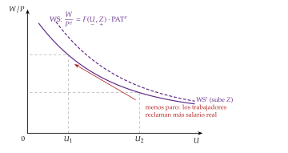
Fuente: elaboración propia a partir de Layard, Nickell y Jackman (1991).
Las empresas: la curva de fijación de precios (PS, price setting). Con el coste laboral unitario, \(\mathrm{CLU}=WL/Y=W/\mathrm{PAT}\), el precio y el salario real que implica son \[P=(1+\mu)\,\frac{W}{\mathrm{PAT}}\quad\Longrightarrow\quad\frac{W}{P}=\frac{\mathrm{PAT}}{1+\mu} \tag{11}\]
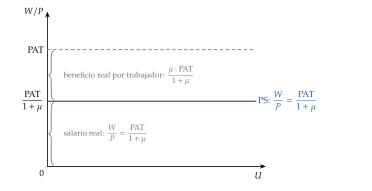
Fuente: elaboración propia a partir de Layard, Nickell y Jackman (1991).
El equilibrio: a medio plazo las expectativas se cumplen, \(P^e=P\) y \(\mathrm{PAT}^e=\mathrm{PAT}\), y el salario real que se negocia tiene que coincidir con el que dejan las empresas. Igualando (10) y (11), la tasa de paro que lo consigue es la NAIRU:
\[F(U^n,Z)=\frac{1}{1+\mu}\tag{12}\]
Es el corte de las 2 curvas (gráfico 9). Con una forma lineal de \(F\), la NAIRU sale en forma cerrada (anexo C).
Interpretación: es un conflicto distributivo.
Los trabajadores reclaman una parte \(F(U,Z)\) de lo que se produce y las empresas, una parte \(\mu/(1+\mu)\). Si las 2 suman más que la unidad, salarios y precios se persiguen.
El paro es lo que modera las pretensiones de los trabajadores hasta que encajan: \(U^n\) es el paro que hace falta para que lo que reclaman unos y otros sea compatible.

Fuente: elaboración propia a partir de Layard, Nickell y Jackman (1991) y Carlin y Soskice (2015, cap. 2).
Muchos manuales dibujan la WS creciente en el plano (empleo, salario real), \((L,W/P)\). No es un error, pero lo que se lee entonces en el eje horizontal no es la NAIRU, sino el número de parados que le corresponde, \(\overline L-L^n=U^n\,\overline L\). Aquí se dibuja en el plano \((U,W/P)\), con los mismos ejes que las fórmulas: la WS decreciente y la PS horizontal. El plano \((L,W/P)\) se usa en el anexo B para comparar con la oferta competitiva de trabajo.
iii) Implicaciones de política económica
Paro involuntario de equilibrio: en \(U^n\) hay personas que trabajarían al salario real vigente y no encuentran empleo, porque el salario no lo fija un mercado competitivo, sino la negociación (o la empresa, para motivar). La NAIRU no es un concepto de vaciado del mercado, sino el paro que hace falta para que las imperfecciones de los mercados de bienes y de trabajo no generen inflación.
Políticas de oferta: bajan la NAIRU las que desplazan las curvas (gráfico 10):
prestaciones y poder sindical (\(Z\)): si suben, la WS se desplaza hacia arriba y \(U^n\) sube; reducir la cuantía o la duración de las prestaciones la baja;
competencia en los mercados de bienes (\(\mu\)): un margen menor sube la PS y baja \(U^n\); la defensa de la competencia y la liberalización de los mercados de productos son también política de empleo;
cuña fiscal: los impuestos sobre la renta y las cotizaciones de los trabajadores reducen el salario neto, y los sindicatos piden más salario bruto (sube la WS); las cotizaciones de las empresas encarecen el trabajo y bajan el salario que dejan (baja la PS); a largo plazo, su efecto depende de que los trabajadores acaben aceptando un salario neto menor;
productividad y formación: como el salario se negocia con la productividad esperada, un nivel de productividad más alto, una vez esperado, no cambia \(U^n\): suben a la vez lo que piden los trabajadores y lo que dejan las empresas; solo la mueven las sorpresas (anexo C). La formación baja el paro de equilibrio por otra vía: reduce el desajuste de cualificaciones y mejora el emparejamiento (I.2).
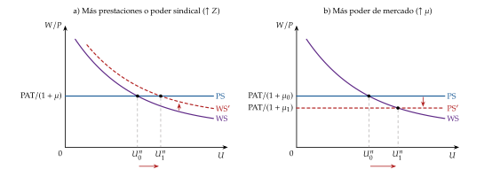
Fuente: elaboración propia a partir de Layard, Nickell y Jackman (1991).
Política de demanda: mueve el paro a corto plazo, pero no la NAIRU. Partimos del punto 0, con la WS y la PS cortándose en \(U^n\) y la inflación estable y esperada (gráfico 11):
el Gobierno aplica una política fiscal expansiva: sube la demanda agregada y, con ella, el empleo; el paro baja a \(U_1<U^n\) (punto 1);
con menos paro, los sindicatos tienen más poder y piden más: el salario real que se negocia, sobre la WS en \(U_1\), supera el que dejan las empresas, sobre la PS;
las empresas aceptan la subida del salario nominal, pero, firmado el convenio, la trasladan a los precios para mantener su margen: el salario real que pagan se queda en la PS, y los trabajadores no cobran el salario real que creían haber pactado hasta la siguiente negociación;
al subir los precios, con la misma cantidad de dinero, baja la oferta monetaria real, sube el tipo de interés y cae la inversión (el efecto Keynes al revés); hoy lo hace el banco central, que sube el tipo de interés al ver subir la inflación [ver tema 3.A.36]. El empleo cae y el paro sube a \(U_2\), entre \(U_1\) y \(U^n\) (punto 2);
en la siguiente negociación, los sindicatos vuelven a pedir más, aunque menos que antes, porque el paro es mayor que \(U_1\); las empresas lo trasladan de nuevo a los precios, y la demanda vuelve a contraerse;
el proceso se repite hasta que el paro vuelve a \(U^n\) (punto 3), donde la inflación deja de subir y se queda en \(\pi_3=\pi_2\).
Resultado: la inflación sube mientras dura la incompatibilidad entre el salario que se pide y el que se paga, es decir, mientras \(U<U^n\), y el proceso acaba con el paro en su nivel inicial y una inflación más alta. Es la curva aceleracionista (6): la política de demanda no reduce la NAIRU. Con una política monetaria expansiva, el razonamiento es el mismo.
Sin histéresis, la NAIRU no guarda memoria de la expansión: «agua pasada no mueve molino».
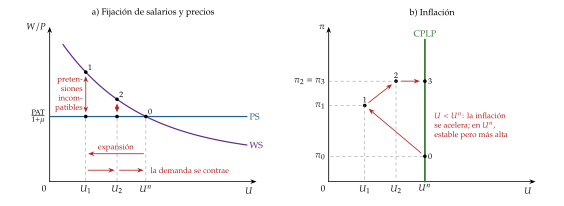
Fuente: elaboración propia.
Perturbaciones de oferta: una subida del precio del petróleo actúa como un margen mayor sobre el coste laboral (baja la PS); si los salarios no se moderan, sube el paro de equilibrio. Es la explicación de Bruno y Sachs (1985) del paro europeo de los 70.
c) Evidencia empírica
Europa frente a Estados Unidos: el paro europeo subió en los 70 y los 80 y no volvió a bajar; el estadounidense, sí (O. Blanchard, 2006). La explicación ha ido cambiando:
en los 70, perturbaciones con salarios rígidos: el petróleo y la desaceleración de la productividad exigían moderar los salarios reales, y no se moderaron (Bruno y Sachs, 1985);
en los 90, instituciones: el paro es mayor con prestaciones más generosas y largas y con negociación colectiva de mucha cobertura y poca coordinación, y menor con más políticas activas (Nickell, 1997); los países con negociación muy centralizada o muy descentralizada lo hacen mejor que los intermedios (Calmfors y Driffill, 1988) [ver tema 3.A.27];
la síntesis, perturbaciones e instituciones juntas: las mismas perturbaciones suben más el paro donde las instituciones del mercado de trabajo son más rígidas (O. Blanchard y Wolfers, 2000).
Estados Unidos en los 90: la NAIRU bajó cuando se aceleró la productividad, porque las pretensiones salariales tardaron en ajustarse (Ball y Mankiw, 2002).
Medida: la NAIRU no se observa y se estima con mucha incertidumbre. En Estados Unidos, el intervalo de confianza al 95 % iba del 4,3 % al 7,3 % (Staiger, Stock y Watson, 1997), y Estrella y Mishkin (1999) la tratan como un concepto de corto plazo, útil para prever la inflación, distinto de la tasa natural de largo plazo.
España: la NAWRU que estima la Comisión Europea pasó del 13,4 % en 2005 al 16,9 % en 2013 y ha bajado al 12,1 % en 2025, casi el doble que la de la zona del euro, del 6,6 % (Comisión Europea, 2026b). Desde 2023, el paro efectivo está por debajo de ella (gráfico 12).
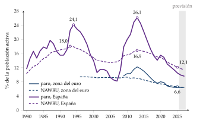
d) Valoración
Aportación: explica un paro de equilibrio que incluye paro involuntario, ordena las políticas de oferta y da a los bancos centrales y a la Comisión Europea una referencia con la que trabajar [ver tema 3.A.36] [ver tema 3.A.42]. Además, une la NAIRU con la curva de Phillips: con la forma lineal de la WS, su pendiente es la de la curva aumentada (anexo C).
Críticas:
se estima mal, y guiar la política por ella es arriesgado; por eso se la ha dado por muerta muchas veces, y siempre vuelve: «¡La NAIRU ha muerto! ¡Larga vida a la NAIRU!», tituló Jimeno (2018);
sus expectativas y su dinámica son muy simples: el modelo nuevo keynesiano con desempleo la reconstruye con expectativas racionales y salarios rígidos (II.5.2);
se mueve con el paro: la NAWRU de España ha seguido al paro con retraso (gráfico 12); si la NAIRU depende del paro efectivo, deja de ser un ancla independiente de la demanda;
puede no ser única: para Farmer (2010), no hay una tasa natural. En los modelos de búsqueda, la negociación de Nash es una forma arbitraria de cerrar el modelo; si se sustituye por una función de creencias (belief function), hay infinitos equilibrios y el paro lo fijan las expectativas, sin volver a un nivel natural (Farmer, 2013) [ver tema 3.A.26].
Y si la NAIRU se mueve con el paro, ¿por qué iba a volver el paro al mismo nivel tras una recesión? Es la pregunta de la persistencia.
III.3. La persistencia del desempleo y la histéresis
a) Idea
La NAIRU supone un paro de equilibrio que fija la estructura del mercado. Su principal problema es que, tras una recesión, el paro tarda mucho en volver, o no vuelve:
en el Reino Unido no pasó del 3,3 % entre 1945 y 1970, y a mediados de los 80 superaba el 12 %; en la Comunidad Europea se dobló entre 1970 y 1980 y volvió a doblarse después (O. Blanchard y Summers, 1986);
en España, cada crisis ha dejado un máximo más alto: el 19,7 % en 1987, el 24,1 % en 1994 y el 26,1 % en 2013, frente a mínimos del 15,5 % en 1990-1991 y del 8,2 % en 2007 (Comisión Europea, 2026a).
Persistencia: el paro vuelve a su nivel de equilibrio, pero despacio. Histéresis: no vuelve, porque el propio equilibrio cambia con el paro pasado. El término viene de la física (un metal que sigue imantado cuando desaparece el campo magnético), y lo trajeron a la macroeconomía O. Blanchard y Summers (1986).
b) Modelo
i) Supuestos
Salarios y precios: el modelo de la NAIRU (III.2), con la WS y la PS.
Inflación: la curva aceleracionista (6), con expectativas adaptativas.
Tasa natural: ya no es constante; depende del paro pasado y de un nivel, \(\overline U^n\), que fija la estructura del mercado (los \(Z\) y el \(\mu\) de la NAIRU).
ii) Desarrollo
En el gráfico de la NAIRU (gráfico 13): partimos del equilibrio 0, con el paro en \(U^n_0\).
Una recesión de demanda sube el paro a \(U_1\) (punto 1). Allí la WS queda por debajo de la PS: los trabajadores piden menos de lo que dejan las empresas, y la inflación baja.
Sin histéresis, la WS y la PS no se mueven, y cuando la demanda se recupera el paro vuelve a \(U^n_0\): agua pasada no mueve molino.
Con histéresis, el paro alto desplaza las propias curvas: la WS sube (los parados ya no moderan los salarios) y la PS baja (se ha perdido capital). La nueva NAIRU, \(U^n_1\), es mayor, y la recuperación se queda en el punto 2.
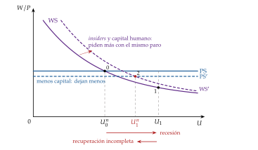
¿Por qué el paro de hoy sube el de mañana? O. Blanchard y Summers (1986) proponen 3 vías, y la tercera es para ellos la principal; cada una mueve una curva:
capital físico (baja la PS): en una recesión cae la inversión y se desguaza capacidad; con menos capital por trabajador baja el salario que pueden pagar las empresas, y el paro de equilibrio sube hasta que el capital se reconstruye [ver tema 3.A.34];
capital humano (sube la WS): el parado pierde cualificación y contactos, y se desanima; las empresas, que no ven su productividad, contratan antes a quien lleva menos tiempo parado (O. Blanchard y Diamond, 1994). Los parados de larga duración apenas compiten por los empleos ni moderan los salarios, y la curva de Beveridge se aleja del origen [ver tema 3.A.26];
insiders y outsiders (sube la WS): «quien se fue a Sevilla perdió su silla». Los salarios los negocian los empleados (insiders), que quieren asegurar su puesto, no que vuelvan los despedidos (outsiders). Tras una recesión, los que quedan, que son menos, fijan salarios que solo garantizan su propio empleo, y el empleo no se recupera cuando pasa la perturbación. Los costes de rotación que dan poder a los insiders son el centro del modelo de Lindbeck y Snower (1988) [ver tema 3.A.27].
Ecuación: una forma sencilla de escribir que la tasa natural depende del paro del periodo anterior es
\[U^n_t=\lambda_h\,U_{t-1}+(1-\lambda_h)\,\overline U^n,\qquad 0\le\lambda_h\le 1\tag{13}\]
con \(\lambda_h\) el grado de histéresis (gráfico 14):
\(\lambda_h=0\), sin histéresis: es la NAIRU de antes; pasada la perturbación, el paro vuelve a \(\overline U^n\);
\(0<\lambda_h<1\), persistencia: vuelve, pero despacio, pasando por NAIRU intermedias;
\(\lambda_h=1\), histéresis pura: no hay un paro de equilibrio único; el de ayer es el de equilibrio hoy, y el paro sigue un paseo aleatorio.
En la curva de Phillips: llevando (13) a la curva aceleracionista, \[\pi_t-\pi_{t-1}=-a\,\big(U_t-U^n_t\big)=-a\,\big[(U_t-U_{t-1})+(1-\lambda_h)\,(U_{t-1}-\overline U^n)\big] \tag{14}\] Con histéresis pura, la inflación depende de la variación del paro y no de su nivel: solo baja mientras el paro sube, y cualquier paro estable es compatible con una inflación estable. Es el «límite de velocidad» que ya intuía Phillips (II.2.2).
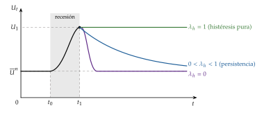
Fuente: elaboración propia a partir de O. Blanchard y Summers (1986).
iii) Implicaciones de política económica
La política de demanda vuelve a importar a largo plazo: una recesión larga sube el paro de equilibrio, y una expansión prolongada, con la economía a alta presión, puede bajarlo. En el paro, el agua pasada sí mueve molino.
Las desinflaciones salen más caras: el paro que causan no se va del todo [ver tema 3.A.41].
La política monetaria debe mirar más al empleo: con insiders y outsiders, la política óptima da mucho peso a estabilizar el empleo, y tanto más cuanto mayor es la histéresis (Galí, 2022) [ver tema 3.A.36].
Las políticas activas y las instituciones, centradas en los parados de larga duración (formación, orientación, incentivos a la contratación), que son los que dejan de presionar sobre los salarios; y una negociación colectiva que tenga en cuenta a los outsiders [ver tema 3.A.27].
c) Evidencia empírica
O. Blanchard y Summers (1986): el paro europeo de los 80 se comporta como si dependiera mucho de su propia historia; el estadounidense, mucho menos.
Ball (2009): en 20 economías avanzadas, las grandes subidas de la NAIRU coinciden con desinflaciones, y las bajadas, con repuntes de la inflación, como predice la histéresis. En España estima que la NAIRU pasó del 6,5 % en 1980 al 14,4 % en 1995, tras la desinflación de finales de los 80 y principios de los 90.
Galí (2015): el paro de la zona del euro tiene un componente no estacionario importante; algunas perturbaciones lo desplazan para siempre.
En la producción: de 122 recesiones en 23 economías avanzadas, unas 2 terceras partes dejaron el PIB por debajo de su tendencia previa incluso tras la recuperación (O. Blanchard, Cerutti y Summers, 2015).
En España, la NAWRU estimada siguió al paro con retraso: subió 3,5 puntos entre 2005 y 2013, mientras el paro subía 17, y ha bajado con él (gráfico 12). Es lo que predice la histéresis, aunque parte del parecido viene de cómo se estima: con un filtro sobre una curva de Phillips de salarios, que tiende a seguir al paro observado (Havik et al., 2014).
d) Valoración
Aportación: explica por qué el paro europeo y el español no vuelven a su nivel tras las crisis y da a la política de demanda un papel duradero.
Limitaciones:
es difícil de distinguir: una tasa natural que cambia despacio por razones estructurales y una que sigue al paro por histéresis dejan datos parecidos;
la evidencia no es concluyente: tras revisarla, O. Blanchard (2018) la considera sugerente, pero no concluyente, y propone mantener la tasa natural como hipótesis de partida sin descartar que la demanda tenga efectos duraderos.
Recapitulación del apartado: la NAIRU es el paro que concilia lo que piden trabajadores y empresas; incluye paro involuntario y solo la bajan las políticas que desplazan la WS y la PS. La histéresis añade que ese equilibrio guarda memoria: las recesiones largas desplazan las curvas, suben la NAIRU y devuelven a la política de demanda un papel a largo plazo.
Conclusión
Recapitulación:
En conclusión, no todo el paro es igual: el friccional y el estructural forman el paro de equilibrio, y el cíclico se mueve con la producción.
La curva de Phillips parecía un menú entre inflación y paro; con expectativas, la disyuntiva es solo de corto plazo y el paro gravita en torno a una tasa natural. Intentar explotarla solo trae un sesgo inflacionista, y de ahí las reglas y los bancos centrales independientes.
La NAIRU explica el paro de equilibrio con poder de mercado: es el paro que concilia salarios y márgenes, e incluye paro involuntario.
Y la histéresis muestra que ese equilibrio puede depender de la historia.
Relevancia:
De esa distinción depende qué paro se combate con demanda y cuál con reformas, cuánto cuesta bajar la inflación y cómo se estiman el PIB potencial y el saldo estructural con los que se juzgan las cuentas públicas.
Extensiones:
La búsqueda y la curva de Beveridge [ver tema 3.A.26]; la negociación, los salarios de eficiencia y los insiders [ver tema 3.A.27].
La curva de Phillips en la síntesis y el monetarismo [ver tema 3.A.5] y con expectativas racionales [ver tema 3.A.6]; la nueva economía keynesiana y la divina coincidencia [ver tema 3.A.7].
La inconsistencia temporal y la NAIRU como guía de la política monetaria [ver tema 3.A.36]; la inflación [ver tema 3.A.41]; la brecha de producción [ver tema 3.A.42].
Para ampliar, el mercado de trabajo español [ver tema 4.A.16] y el saldo estructural [ver tema 4.B.4].
Opinión:
La tasa natural sigue siendo una referencia útil, pero no un destino.
En España, con un paro de equilibrio alto y muy sensible al ciclo, conviene tratarla como algo que la política puede mover: para bien, con reformas, y para mal, con recesiones largas.
Idea final:
Volviendo a la pregunta del principio, hay un paro de equilibrio, pero no es ajeno a la historia: en el paro, el agua pasada sí mueve molino.
Por eso no basta con esperar a que el paro vuelva solo; hay que impedir que el de hoy se convierta en el de mañana, protegiendo a las personas más que a los puestos de trabajo, como propone la flexiseguridad, y devolviendo pronto a los parados al empleo.
A. Anexo: el mercado de trabajo antes de la curva de Phillips
Desarrollo del subapartado II.1, que en el cante se resume. El modelo neoclásico del mercado de trabajo [ver tema 3.A.25] y el pensamiento de Keynes [ver tema 3.A.4] tienen su propio tema; aquí se cuenta lo necesario para seguir el debate sobre el paro.
Un repaso de la macroeconomía neoclásica anterior a Keynes, en The History of Economic Thought Website (2026).
A.1. Enfoque neoclásico
a) Supuestos
Agentes racionales: los trabajadores maximizan su utilidad y las empresas, su beneficio.
Información perfecta: ni incompleta ni asimétrica.
Trabajo homogéneo, sin sustitutivos cercanos.
Mercado atomizado y salarios y precios flexibles: muchos oferentes y demandantes, que toman el salario y los precios como dados (supuestos 4 y 6 de la tabla 2).
b) Desarrollo
Demanda de trabajo: la empresa elige el empleo que maximiza su beneficio, dado el capital \(\overline K\), \[\begin{array}{rl}\displaystyle \max_{L} & \displaystyle P\,F(L,\overline K)-W\,L \\ \text{s.a.} & L\geq 0\end{array}\] y contrata hasta que el salario nominal iguala el valor de la productividad marginal, \(W=P\cdot\mathrm{PMg}_L\), es decir, \(W/P=\mathrm{PMg}_L\). Con productividad marginal decreciente, la demanda de trabajo baja con el salario real. La causalidad va del salario al empleo, y la demanda de producto de la empresa no interviene: la empresa vende lo que quiera al precio dado.
Oferta de trabajo: sale de la elección entre consumo y ocio de cada trabajador; en el óptimo, la desutilidad marginal del trabajo (el ocio al que se renuncia) iguala lo que vale el salario real [ver tema 3.A.25]. La oferta agregada de trabajo es la suma de las individuales.
Equilibrio: el salario real se ajusta hasta que la oferta iguala a la demanda (gráfico 15, el de referencia del modelo neoclásico [ver tema 3.A.25]). Si el salario está por debajo del de equilibrio, las empresas compiten por los trabajadores y lo suben; si está por encima, sobran trabajadores y baja. El salario y el empleo los fijan la tecnología y las preferencias.
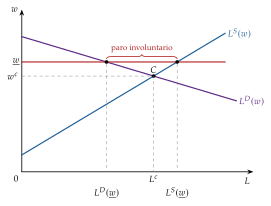
Fuente: elaboración propia.
c) Implicaciones
Sin paro involuntario: quien quiere trabajar al salario de equilibrio encuentra empleo; solo hay paro involuntario si algo impide que el salario baje (un salario mínimo, la negociación colectiva), y la recomendación es eliminar esas trabas.
La oferta manda: el empleo de equilibrio fija la producción, la oferta agregada es vertical y la política de demanda no mueve el empleo.
Dicotomía clásica: el empleo y la producción se determinan sin intervención del dinero ni del nivel de precios.
A.2. Enfoque keynesiano
a) Supuestos
Salario nominal: trabajadores y empresas negocian el salario nominal, no el real; el salario que se pide no depende del nivel de precios.
Rigidez a la baja: ante una perturbación negativa de demanda, el salario nominal no baja y el ajuste se hace por cantidades.
El resto, como en el modelo neoclásico.
b) Desarrollo
Demanda de trabajo: la neoclásica, \(W=P\cdot\mathrm{PMg}_L\).
Oferta de trabajo: Keynes no la usa para fijar el empleo. La demanda agregada fija la producción y, con la función de producción, el empleo; el salario real es el que corresponde a ese empleo.
Una caída de la demanda (gráfico 16):
en el mercado de bienes (panel b), la demanda agregada pasa de \(\mathrm{DA}_0\) a \(\mathrm{DA}_1\), y la producción y los precios bajan de \(Y_0\) y \(P_0\) a \(Y_1\) y \(P_1\), por debajo de \(Y_F\), la producción de pleno empleo;
en el mercado de trabajo (panel a, con el salario nominal \(W\) en el eje vertical), la demanda de trabajo, el valor de la productividad marginal, pasa de \(P_0\cdot\mathrm{PMg}_L\) a \(P_1\cdot\mathrm{PMg}_L\);
con el salario nominal fijo en \(W_0\), el empleo cae de \(L_0\) (\(E_0\)) a \(L_1\) (\(E_1\)) y aparece paro involuntario: la distancia entre \(L_1\) y lo que ofrecen los trabajadores a \(W_0\) según \(L^S\), personas que trabajarían al salario vigente y no encuentran empleo.
Una subida de la demanda: suben los precios, baja el salario real y aumentan el empleo y la producción. Por eso la oferta agregada tiene pendiente positiva mientras haya recursos ociosos; cuando se agotan, cada subida de precios se traslada a los salarios y la oferta agregada se vuelve vertical, como en el caso neoclásico.

Fuente: elaboración propia a partir de Keynes (1936, cap. 2); OA, oferta agregada.
c) Implicaciones
El paro involuntario nace de una demanda insuficiente y se combate con políticas de demanda. Bajar los salarios no lo resuelve: solo crearía empleo si aumentara la inversión, y nada lo garantiza (capítulo 19 de la Teoría general).
A.3. La síntesis neoclásica: los casos del modelo IS-LM
En el modelo IS-LM [ver tema 3.A.5], el paro se debe a rigideces del salario nominal: puede haber equilibrio en los mercados de bienes y de dinero, a un nivel de precios dado, y paro al salario vigente.
Con salarios flexibles, la bajada de salarios y precios aumenta los saldos reales, desplaza la LM hacia la derecha, baja el tipo de interés y estimula la inversión hasta eliminar el paro: es el efecto Keynes. Hay 2 casos en los que no funciona:
trampa de la liquidez: la demanda de dinero es perfectamente elástica al tipo de interés; los saldos reales de más no van al mercado de bonos y el tipo de interés no baja;
inversión insensible al tipo de interés: el tipo baja, pero la inversión no responde.
En los 2, bajar salarios no crea empleo y solo una política fiscal expansiva reduce el paro.
Para la síntesis, por tanto, el paro con salarios flexibles es un caso particular, no una «teoría general».
Lo que queda abierto: para mantener más empleo no basta con una expansión puntual, que sube los precios una sola vez; habría que repetirla cada año, y eso es inflación. Y los monetaristas criticarán que los trabajadores negocien sin tener en cuenta la inflación que esperan. Son las 2 preguntas que responden la curva de Phillips y su ampliación con expectativas (II.2 y II.3).
B. Anexo: tasa natural y NAIRU, ¿lo mismo?
Se usan a menudo como sinónimos (Ball y Mankiw, 2002), y tienen 2 rasgos en común:
carácter estructural, pero no son un mínimo irreductible: la tasa natural baja con un emparejamiento más eficiente (movilidad geográfica, servicios públicos de empleo, cualificaciones que encajen con lo que piden las empresas), y la NAIRU, además, con menos poder de mercado de empresas y sindicatos;
sin tensiones: las 2 son la tasa de paro con la que no hay presiones inflacionistas ni deflacionistas.
Pero Estrella y Mishkin (1999) prefieren distinguirlas: la tasa natural es un concepto de largo plazo, el paro que habría sin factores cíclicos, que cambia despacio; la NAIRU, tal como se usa para prever la inflación, uno de corto plazo, a un año vista, que se mueve con las perturbaciones de oferta (una mala cosecha que sube los precios sube la tasa de paro compatible con una inflación estable) y fluctúa mucho más (tabla 4).
| Tasa natural | NAIRU | |
|---|---|---|
| Origen | Friedman (1968) y Phelps (1967) | Modigliani y Papademos (1975) (NIRU); modelo de Layard, Nickell y Jackman (1991) |
| Definición | el paro con la inflación igual a la esperada; el del «sistema walrasiano», con sus fricciones e imperfecciones | el paro con el que la inflación no se acelera |
| Modelo que la explica | búsqueda y flujos: \(U^n=s/[s+f(\theta^*)]\) (1) | fijación de salarios y precios con poder de mercado: \(F(U^n,Z)=1/(1+\mu)\) (12) |
| Paro que incluye | sobre todo friccional | también involuntario de equilibrio |
| Horizonte | largo plazo: sin factores cíclicos; cambia despacio | para Estrella y Mishkin (1999), corto plazo: fluctúa con las perturbaciones de oferta |
| ¿Es óptima? | no necesariamente: solo con la condición de Hosios | no: el poder de mercado la eleva |
| Cómo se reduce | mejor emparejamiento (servicios de empleo, movilidad, cualificación) | además, menos poder de mercado de empresas y sindicatos, prestaciones y cuña fiscal |
Fuente: elaboración propia a partir de Friedman (1968), Estrella y Mishkin (1999) y Ball y Mankiw (2002).
La diferencia no está en la estructura de mercado del concepto: a menudo se dice que la tasa natural es la de la competencia perfecta y la NAIRU la de la competencia imperfecta, y que por eso la NAIRU es mayor. No es así: Friedman incluye en su tasa natural «las imperfecciones del mercado» (Friedman, 1968, 8) y dice que el salario mínimo y los sindicatos la elevan (II.3). Lo que cambia es el modelo con que se explica: en los de búsqueda, el paro es sobre todo friccional; en el de fijación de salarios y precios, hay paro involuntario.
Gráficamente (gráfico 17), en el plano \((L,W/P)\), con la población activa, \(\overline L\), y la oferta competitiva de trabajo, \(L^S\), la que darían los trabajadores si cada uno negociara por su cuenta [ver tema 3.A.25]:
la WS, ahora creciente en el empleo, queda por encima de \(L^S\): con negociación, para cada nivel de empleo el salario real es mayor que el competitivo;
en el equilibrio, \(E\), la WS corta a la PS: el empleo es \(L^n\) y el salario real, \(\mathrm{PAT}/(1+\mu)\); a ese salario real, los trabajadores ofrecerían \(L^S_0\), sobre \(L^S\);
entre \(L^n\) y \(L^S_0\) está el paro involuntario de equilibrio: personas que trabajarían a ese salario y no encuentran empleo. No es «paro keynesiano»: no se debe a la falta de demanda, y una expansión solo lo reduce mientras acelera la inflación (III.2);
entre \(L^S_0\) y \(\overline L\) están quienes no quieren trabajar a ese salario: en el lenguaje de los modelos, paro voluntario;
la distancia total, \(\overline L-L^n\), es el número de parados que corresponde a la NAIRU, \(U^n\,\overline L\), no la NAIRU, que es una tasa.
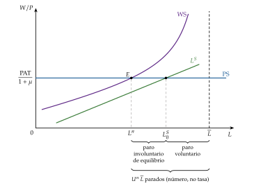
Fuente: elaboración propia a partir de Carlin y Soskice (2015).
C. Anexo: la NAIRU con la forma lineal
Forma lineal: con \(F(U,Z)=1-a\,U+Z\), \(a>0\), la WS y la PS son \[\frac{W}{P^e}=(1-a\,U+Z)\cdot\mathrm{PAT}^e,\qquad \frac{W}{P}=\frac{\mathrm{PAT}}{1+\mu}\] La letra es la misma que la pendiente de la curva de Phillips aumentada (5), porque, como se ve en el paso 2, es la misma pendiente.
Paso 1, la NAIRU. Con \(P^e=P\) y \(\mathrm{PAT}^e=\mathrm{PAT}\), igualando las 2 curvas, \[1-a\,U^n+Z=\frac{1}{1+\mu}\quad\Longrightarrow\quad a\,U^n=1-\frac{1}{1+\mu}+Z=\frac{\mu}{1+\mu}+Z\quad\Longrightarrow\quad U^n=\frac{1}{a}\left(\frac{\mu}{1+\mu}+Z\right)\] Sube con el margen y con \(Z\), baja con \(a\) (cuanto más modera el paro las pretensiones salariales, menos paro hace falta) y no depende del nivel de la productividad. ∎
Paso 2, de la WS y la PS a la curva de Phillips. Despejando \(W\) en la WS y llevándolo a la PS, \[\frac{P}{P^e}=(1+\mu)\,(1-a\,U+Z)\,\frac{\mathrm{PAT}^e}{\mathrm{PAT}}\] Dividiendo los 2 precios por el del periodo anterior y tomando logaritmos, con \(\ln(1+x)\approx x\) para \(x\) pequeño, \[\pi_t\approx\pi^e_t+\mu+Z-a\,U_t-\varepsilon^{\mathrm{PAT}}_t,\qquad \varepsilon^{\mathrm{PAT}}_t\equiv\ln\frac{\mathrm{PAT}_t}{\mathrm{PAT}^e_t}\]
sin sorpresas de productividad, \(\pi_t\approx\pi^e_t-a\,(U_t-U^n)\), con \(U^n\approx(\mu+Z)/a\), la NAIRU del paso 1 con \(\mu/(1+\mu)\approx\mu\): es la curva aumentada (5), y su pendiente es el \(a\) de la WS;
con expectativas adaptativas, \(\pi^e_t=\pi_{t-1}\), es la curva aceleracionista (6);
una productividad mayor que la esperada (\(\varepsilon^{\mathrm{PAT}}_t>0\)) baja la inflación con el mismo paro: es como si la NAIRU bajara a \((\mu+Z-\varepsilon^{\mathrm{PAT}}_t)/a\) mientras las expectativas se ajustan. Es la explicación de Ball y Mankiw (2002) para Estados Unidos en los 90. ∎
Paso 3, sorpresas de productividad en el medio plazo. Si \(P^e=P\) pero \(\mathrm{PAT}^e\neq\mathrm{PAT}\), igualando las 2 curvas, \[F(U^n,Z)=\frac{\mathrm{PAT}}{(1+\mu)\,\mathrm{PAT}^e}\quad\Longrightarrow\quad U^n=\frac{1}{a}\left(1+Z-\frac{\mathrm{PAT}}{(1+\mu)\,\mathrm{PAT}^e}\right)\] con la forma lineal: una productividad mayor que la esperada baja la NAIRU y una menor la sube, mientras las expectativas no se corrigen. Con \(\mathrm{PAT}^e=\mathrm{PAT}\) se vuelve al paso 1. ∎
Paso 4, sin productividad esperada en la WS. Si el salario real que se negocia no tiene en cuenta la productividad, \(W/P^e=1-a\,U+Z\) (el «1» es ahora un nivel de salario real), la condición de equilibrio se escribe con la WS así modificada y la PS de siempre: \[\frac{\mathrm{PAT}}{1+\mu}=1-a\,U^n+Z\quad\Longrightarrow\quad U^n=\frac{1}{a}\left(1+Z-\frac{\mathrm{PAT}}{1+\mu}\right)=\frac{1}{a}\left(\frac{1+\mu-\mathrm{PAT}}{1+\mu}+Z\right)\] y la NAIRU baja con el nivel de la productividad. Por eso los manuales ponen \(\mathrm{PAT}^e\) en la WS: sin ella, el crecimiento de la productividad acabaría con el paro, y no es lo que se observa a largo plazo. ∎
En el test, leer bien qué WS da el enunciado. Si la WS no lleva la productividad esperada, la NAIRU depende de \(Z\) y de \(\mu\) (con signo positivo) y del nivel de la productividad (con signo negativo): \(U^n=f(Z,\mu,\mathrm{PAT})\). Si la lleva y a medio plazo \(\mathrm{PAT}^e=\mathrm{PAT}\), solo de \(Z\) y de \(\mu\): \(U^n=f(Z,\mu)\).
D. Anexo: aspectos para el test
Preguntas tipo test del primer ejercicio: simulador de test.
Tipos de paro: friccional y estructural forman la tasa natural; el cíclico es \(U_t-U^n\); el estacional se quita al desestacionalizar. Paro keynesiano (falta de demanda) y clásico (salarios reales altos), de Malinvaud.
Curva de Phillips original: Phillips (1958), Reino Unido, datos de 1861-1913 (y comparación con 1913-1948 y 1948-1957), con salarios nominales, no precios; salarios estables con un paro de alrededor del 5,5 %.
Menú de Samuelson y Solow (1960): la curva en precios, para Estados Unidos; estabilidad de precios con un 5,5 % de paro, y un 3 % de paro con una inflación del 4,5 %.
Tasa natural: Phelps (1967) y Friedman (1968) (discurso presidencial ante la American Economic Association); la curva de largo plazo es vertical; con expectativas adaptativas, mantener el paro por debajo de \(U^n\) acelera la inflación.
Inconsistencia temporal: Kydland y Prescott (1977) y Barro y Gordon (1983a); con discrecionalidad, \(\pi^D=\pi^*+(\alpha/\gamma)(U^n-U^*)\) y el paro es el natural; soluciones: reputación, reglas, banquero conservador (Rogoff, 1985), contrato (Walsh, 1995) e independencia.
NKPC: \(\pi_t=\beta\,\mathbb{E}_t[\pi_{t+1}]+\kappa\,x_t+u_t\), con precios à la Calvo; divina coincidencia sin \(u_t\) (O. J. Blanchard y Galí, 2007).
NIRU y NAIRU: NIRU de Modigliani y Papademos (1975); el acrónimo NAIRU ya lo usa Tobin (1980); NAWRU, la versión salarial que estima la Comisión Europea.
Determinantes de la NAIRU: sube con \(Z\) (prestaciones, poder sindical, cuña fiscal) y con \(\mu\); con \(\mathrm{PAT}^e\) en la WS no depende del nivel de la productividad, y sin ella, baja con él (anexo C).
Histéresis: O. Blanchard y Summers (1986); \(\lambda_h=1\), histéresis pura (paseo aleatorio, importa la variación del paro); \(0<\lambda_h<1\), persistencia; mecanismos: capital físico (baja la PS), capital humano e insiders y outsiders (suben la WS).
Ley de Okun: Okun (1962), unos 3 puntos de producción por punto de paro (\(\vartheta\approx1/3\)); hoy, unos 0,45 puntos de paro por punto de crecimiento en Estados Unidos y 0,85 en España (Ball, Leigh y Loungani, 2017).
Bibliografía
En la exposición, \(U_t\) es la tasa de paro y \(U^n\) la tasa natural; en el apartado III, \(U^n\) es también la NAIRU, porque en el modelo de fijación de salarios y precios las 2 coinciden (las diferencias, en el anexo B). En las fórmulas de la EPA, \(U\) son los parados y \(u=U/A\) la tasa [ver tema 4.A.16].↩︎
Keynes no veía en la rigidez del salario la causa última del paro. En el capítulo 19 de la Teoría general critica a Arthur Cecil Pigou por proponer bajar los salarios: una rebaja del salario solo crea empleo si aumenta la inversión, y para eso tiene que bajar el tipo de interés (más saldos reales al caer los precios) o subir la eficiencia marginal del capital, y nada garantiza ninguna de las 2 cosas. Con trampa de la liquidez, el primer canal no funciona, y la deflación salarial puede acabar en una espiral deflacionista. Prefería subir los precios con más demanda: los trabajadores se resisten mucho menos a una bajada del salario real por esa vía que a un recorte de su salario nominal, que en una negociación descentralizada solo llega tras conflictos costosos.↩︎
No fue el primero: Irving Fisher ya había relacionado la inflación de precios con el paro en Estados Unidos (Fisher, 1926). Su artículo pasó inadvertido hasta que se reeditó en 1973 con el título «I Discovered the Phillips Curve» (Fisher, 1973). La literatura sobre la curva de Phillips, la tasa natural y la NAIRU parte del artículo de Phillips, no del de Fisher.↩︎
Phillips probablemente no la leía como una relación estable entre inflación y paro: esa lectura vino del ambiente de la época, que explicaba la inflación por el empuje de los costes (De Vroey, 2016, 42).↩︎
Aquí \(\mu\) es el margen neto sobre el coste. Con la demanda de Avinash Dixit y Joseph Stiglitz, en la que cada empresa fija su precio con un margen que depende de la elasticidad de sustitución \(\sigma\) entre variedades, \(1+\mu=\sigma/(\sigma-1)\) [ver tema 3.A.18].↩︎
Milton Friedman recibió el Premio Nobel de Economía en 1976 «por sus logros en los campos del análisis del consumo, la historia y la teoría monetarias, y por su demostración de la complejidad de la política de estabilización» (The Nobel Prize, 1976), y Edmund Phelps, en 2006, «por su análisis de las disyuntivas intertemporales en la política macroeconómica» (The Nobel Prize, 2006).↩︎
La tasa natural no es constante: cambia con la composición de la población activa, la tecnología, las instituciones y las políticas. Tampoco es un mínimo irreductible ni un objetivo, sino una referencia para saber cuánto paro es cíclico. Su versión empírica más usada en Europa es la NAWRU (non-accelerating wage rate of unemployment), la tasa de paro que no acelera los salarios, que estima la Comisión Europea: en 2025, el 12,1 % en España y el 6,6 % en la zona del euro (Comisión Europea, 2026b).↩︎
Finn Kydland y Edward Prescott recibieron el Premio Nobel de Economía en 2004 «por sus contribuciones a la macroeconomía dinámica: la consistencia temporal de la política económica y las fuerzas que impulsan los ciclos económicos» (Nobel Prize Outreach, 2004).↩︎
Con la notación del temario, \(\gamma_{W,t}=\beta\,\mathbb{E}_t[\gamma_{W,t+1}]-\kappa_W\,(U_t-U^n)\) y \(U^n=\mu^W/\varphi\), con \(\mu^W\) el margen salarial deseado, \(\varphi\) la inversa de la elasticidad de Frisch y \(\kappa_W\) la pendiente de la curva (Galí, 2011).↩︎
La PS puede tener pendiente. Con rendimientos decrecientes, al subir el paro sube la productividad del trabajo y la PS crece con \(U\). Y el margen puede ser contracíclico: cuando las ventas son altas, a las empresas les tienta más romper la colusión tácita bajando el precio, de modo que el margen sube con el paro (Rotemberg y Woodford, 1991). En los datos, sin embargo, la productividad del trabajo es procíclica, porque las empresas retienen plantilla en las recesiones. Si los efectos se compensan, la PS es horizontal, que es el supuesto habitual.↩︎